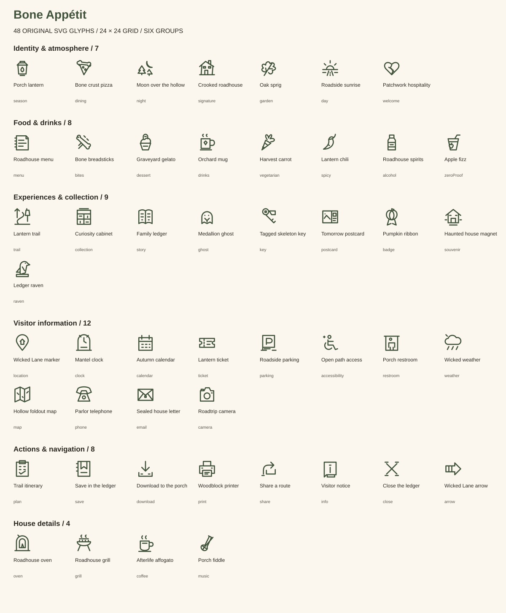
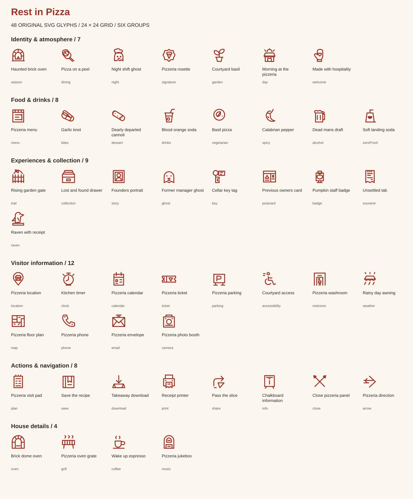
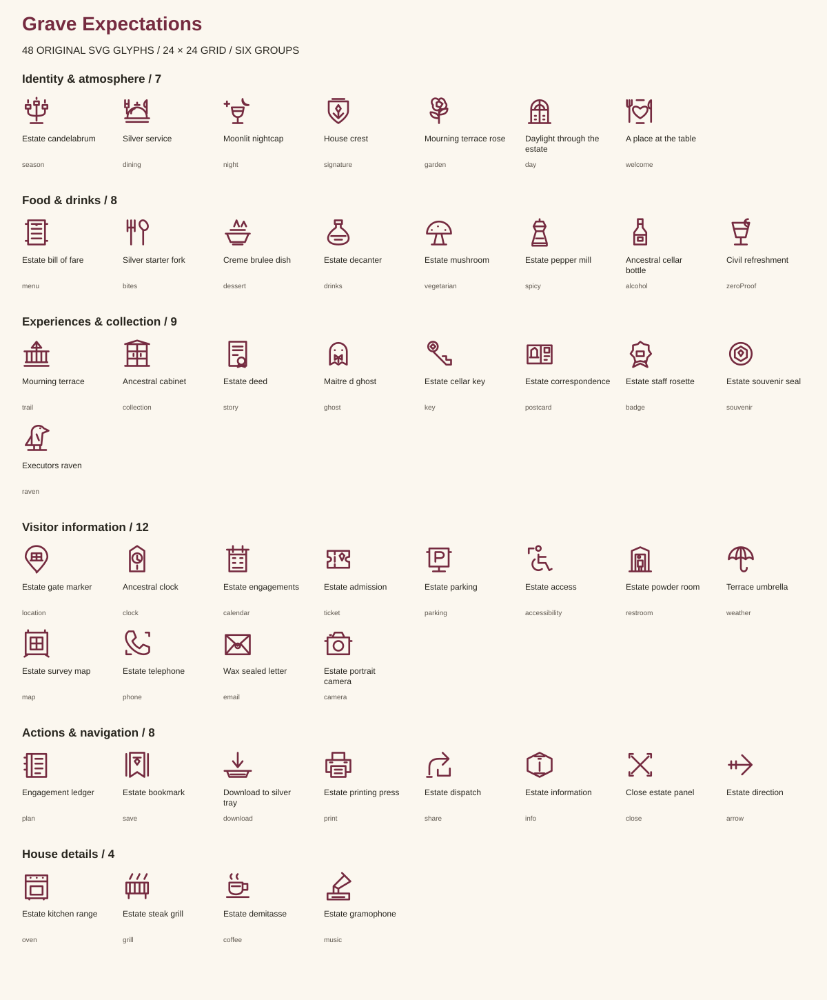
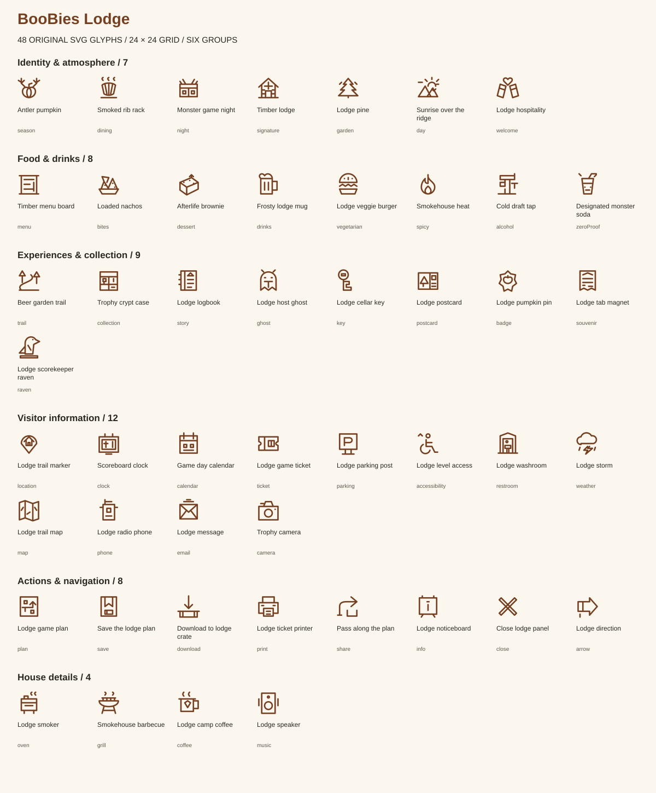

Four full glyph libraries.
192 original drawings: 48 for each property. Every library covers the same six groups with its own drawings and symbol IDs.
Bone Appétit
Browse all 48 glyphs · Symbol sprite · Coverage manifest


Rest in Pizza
Browse all 48 glyphs · Symbol sprite · Coverage manifest


Grave Expectations
Browse all 48 glyphs · Symbol sprite · Coverage manifest


BooBies Lodge
Browse all 48 glyphs · Symbol sprite · Coverage manifest


Maintain the libraries
Source: property-glyphs.js. Run npm run build:glyphs to rebuild the reusable libraries or npm run build to rebuild the libraries and visitor pages. npm run check:glyphs checks role coverage, unique drawings, file drift and renderer/export integration.